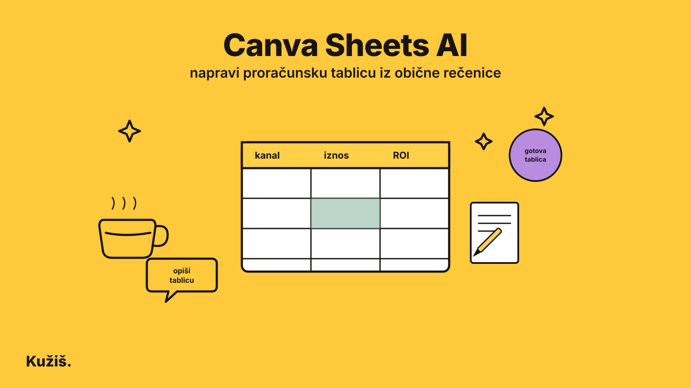

Canva Sheets AI: napravi proračunsku tablicu iz obične rečenice

Canva Sheets AI, dio velikog Canva AI 2.0 paketa objavljenog 15. srpnja 2026., iz jedne rečenice generira gotovu, uređenu tablicu s pravim podacima - proračun, raspored ili kalendar sadržaja - bez otvaranja Excela i bez ručnog pisanja ijedne formule.
Što Canva Sheets AI zapravo radi
Opišeš što trebaš, na primjer „proračun za event s troškovima po kategorijama“, a Canva AI generira strukturiranu, vizualno uređenu tablicu. Ne dobiješ prazan predložak nego tablicu već popunjenu realnim primjerima podataka, s formulama koje odmah rade i naslovima stupaca koji imaju smisla.
Sheets AI dijeli isti princip kao Canva Code 2.0 i drugi dijelovi AI 2.0 paketa: opišeš cilj, AI sastavi cijeli rezultat, a ti ga zatim doradiš klikom - bez ponovnog promptanja za svaku sitnicu.
Kako napraviti svoju prvu tablicu
- Otvori novi Canva dizajn i odaberi Sheet, ili jednostavno opiši što trebaš u Canva AI polju za upit.
- Budi konkretan: umjesto „napravi mi proračun“, opiši svrhu, stupce koje očekuješ i vremenski period - na primjer „mjesečni proračun za marketing sa stupcima kanal, iznos i ROI za zadnja tri mjeseca“.
- Pregledaj generiranu tablicu i preimenuj stupce ili dodaj retke izravno klikom, kao u bilo kojem Canva dizajnu.
- Po potrebi zatraži izmjenu kroz novi upit, na primjer „dodaj stupac za status plaćanja“ - AI ažurira samo taj dio, ostatak tablice ostaje netaknut.
„Najveća razlika prema praznom Excel predlošku: Sheets AI ti da tablicu koja već izgleda i radi kao gotov proizvod, ne kao domaća zadaća koju tek trebaš popuniti.“
Za koga je dobra (i kad radije posegni za Excelom)
Sheets AI je odličan izbor za brzo sastavljanje proračuna, rasporeda sadržaja, popisa zadataka ili jednostavnog praćenja projekta - svega što inače radiš u novoj praznoj tablici i gubiš prvih deset minuta na formatiranje.
Nije zamjena za Excel ili Google Sheets kad trebaš složene formule, velike baze podataka s tisućama redaka ili napredna izvještajna rješenja s pivot tablicama - za to je i dalje bolji specijalizirani alat.
Najčešća pitanja
Treba li mi Canva Pro za Sheets AI?
Osnovno generiranje tablica dostupno je i na besplatnom planu, uz dnevno ograničenje broja AI upita. Pro i viši planovi dobivaju veći broj upita dnevno.
Mogu li izvesti Canva tablicu u Excel ili Google Sheets?
Da, gotovu tablicu možeš izvesti kao XLSX ili CSV i nastaviti raditi u Excelu ili Google Sheetsu ako ti zatreba napredna funkcionalnost.
Razumije li Sheets AI hrvatski jezik u opisu?
Da, upit možeš napisati na hrvatskom - Canva AI generira tablicu i njene sadržaje na jeziku na kojem si postavio upit.